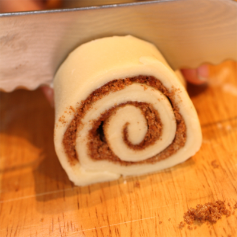

Cinnamon roll
Eu tenho me aventurado muito pelos pães ultimamente. Por um longo tempo eu demorei pra acertar um pão decente, mas desde que cheguei nessa receita tudo mudou. Além de ser cheirosíssima, essa receita tem uma massa bem simples e que dá pra adaptar com qualquer recheio. Em geral ela vem com uma cobertura de creamcheese, mas como eu não sou muito fã, tô anotando só a receita do pão. Eu testei esse pão com um recheio diferente e no final da página falo sobre como funciona. Agora sem mais delongas, vamos à receita!
Separa aí
Tentei juntar aqui várias receitas que fui achando e ir adaptando as quantidades de cada ingrediente pra chegar na melhor receita pra mim.
- Uma xícara de leite
- Quatro xícaras de farinha de trigo
- Quatro colheres de manteiga
- Dois ovos
- Uma pitada de sal
- Uma xícara de açúcar
- Uma colher de sopa e meia de canela em pó
- 10g de fermento biológico seco
E mãos na massa!
- Coloque 10g de fermento biológico seco dentro do leite pra ele se ativar. A temperatura do leite tem que ser mais ou menos a mesma de dentro da sua boca, só testar com o dedo.
- Misture a farinha de trigo, os ovos, duas colheres de manteiga, metade do açúcar e uma pitada de sal, mexendo bem pra formar uma espécie de "farofa".
- O leite vai ficar com um leve cheirinho do fermento, aí você coloca ele junto do resto dos ingredientes e vai misturando. O ponto certo é quando não estiver grudando em tudo, mas ela ainda fica um pouco grudenta.
- Descanse ela por 5 minutos depois sove por 10. Faça uma bola da massa e deixe guardadinha por 1 hora pra ela crescer bem.
- Depois que crescer, abre essa massa. Quando fermenta, a massa fica bem macia, então é mega fácil. Abre ela pra ficar com um centímetro de altura. Enfim, não deixe grossona mas também não deixe fina demais. Abra em forma de retângulo.
- Misture a outra metade do açúcar com a canela em pó, espalhe o restante da manteiga na massa. Pode cobrir bem, porque além do sabor, essa manteiga vai ajudar a segurar o açúcar e a canela no lugar. Espalhe a misturinha de canela pela massa.
- Enrole a massa deixando a canela com açúcar pelo lado de dentro parecendo um rocambole. Pode ir fazendo uma forcinha que é pra ela fechar direito. Depois corte as rodelinhas com uns 4 a 5 centímetros de largura cada. 
- Coloque os rolinhos numa forma, coberta com papel manteiga. Se você preferir, unte a forma. Deixe lá mais 30 minutos pra darem mais uma fermentada. Antes de assar, pincele eles com uma gema de ovo misturada com uma colher de sopa de água.
- Asse por 30 minutos no forno a 180 graus. Pra ajudar a assar mais uniformemente, vire a forma aos 15 minutos. Depois é só deixar esfriar. O cheiro perfeito viu meus amores.